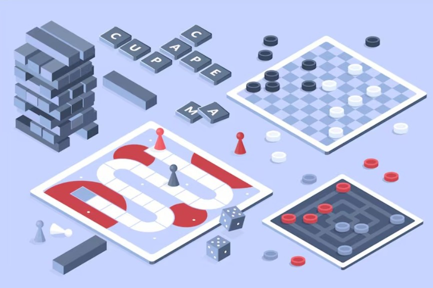

Настольные игры
Магазин для живого общения
BoardGame Hub — это онлайн‑витрина отобранных настольных игр для тех, кто ценит тишину вокруг стола и громкий смех друзей. Вместо сотен случайных позиций мы собрали короткий список игр, которые реально раскладывают каждый месяц, а не пылятся на полке.
Выберите игру для уютного вечера вдвоём, шумной вечеринки или семейного праздника — в каталоге уже есть всё, что нужно: от стратегий до простых семейных игр, понятных с первого хода.

Минималистичное пространство стола без лишних деталей помогает сосредоточиться на общении, принятии решений и живых реакциях, а не на визуальном шуме.